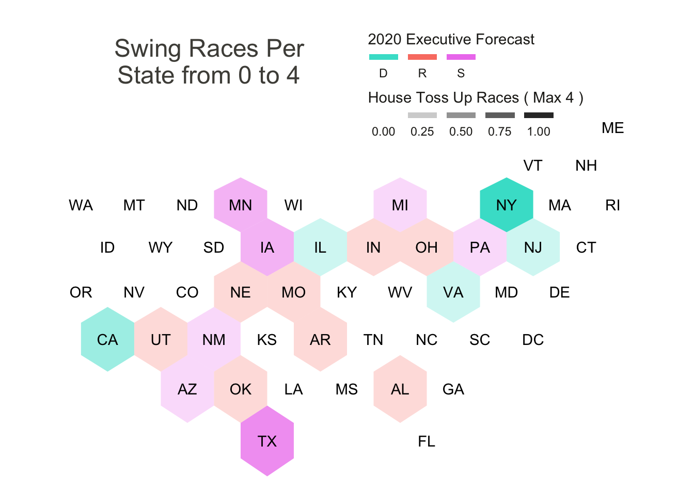
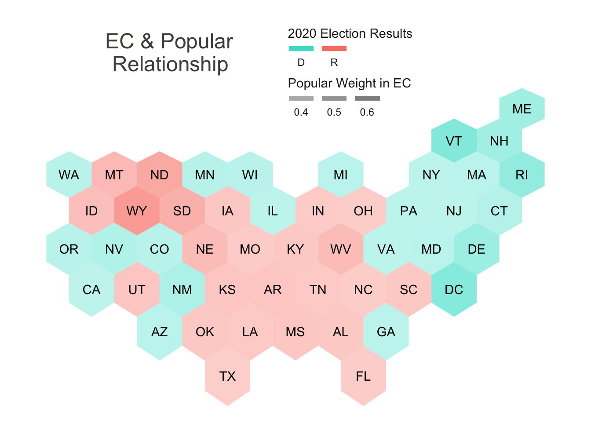
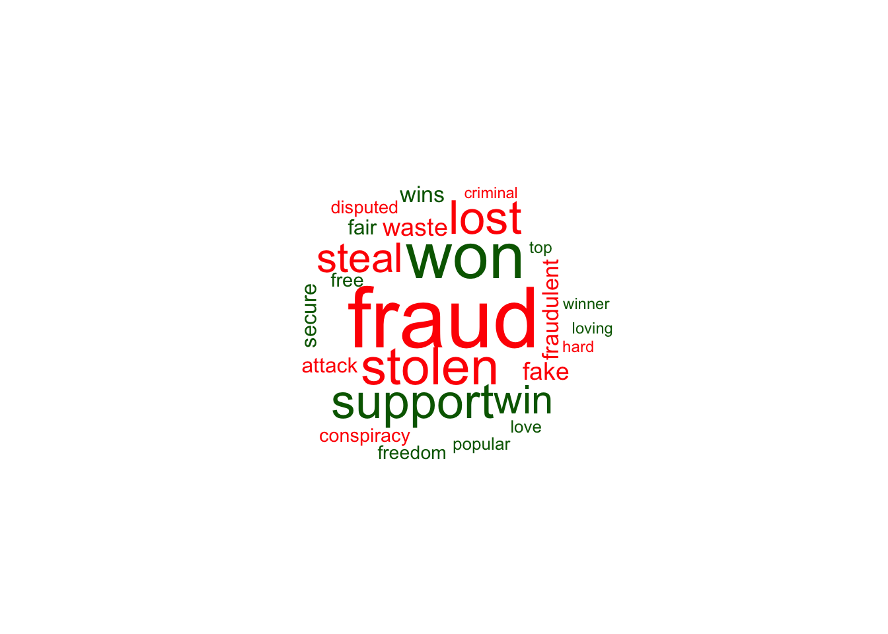
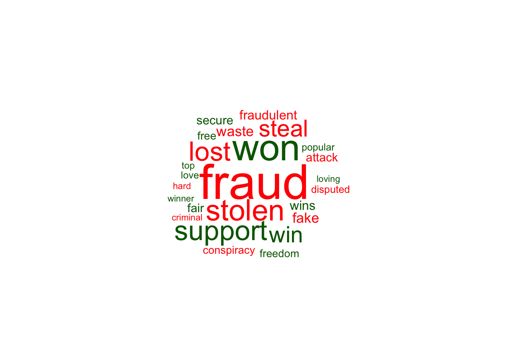
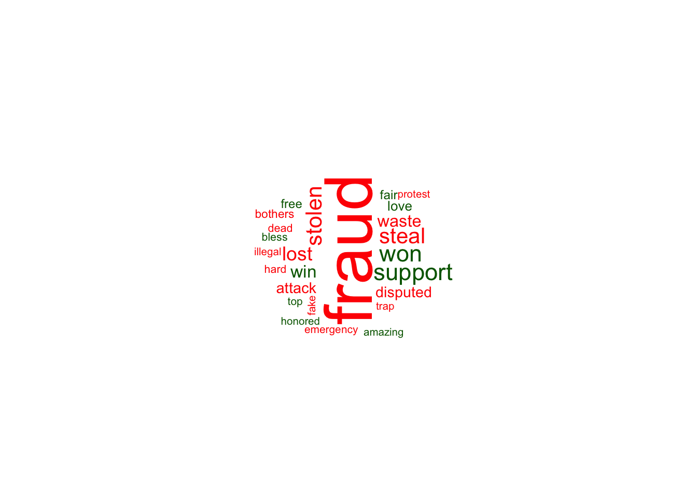

US Federal Election 2020
Twitter Sentiments and the Electoral College
Marko Lazin
Introduction
The United States Federal Election of 2020 has come and gone. This moment in United States history is being described by many contemporaries as rife with division and factionalism, with ideological perspectives assuming adversarial stances against one another. This framing of the present is simultaneously visceral and opaque, both concerning and difficult to contextualize / quantify. Describing this moment has traditionally been done with words, and in modern times has become decentralized with the advent and propagation of social media platforms.
In the days and weeks following the November 4th, emotional on-lookers and participants have taken to social media platforms to voice their perspectives. This deluge of sentiment is abundant with information that may help to make sense of how political election information is being received across the United States. The remainder of this research is tasked at unpacking the voices of twitter users on the 13th and 14th of November following the election. Specifically this analysis will do two general things: set a backdrop, in numbers, of the electoral college mechanism; and dissect the words being used when discussing politics in the United States during this time period.
Ultimately the goal of this exercise is to shed light on how people are feeling after the election, how they are expressing what they are feeling in words, where pluralism expresses in the United States electoral mechanisms, and where votes translate most directly to electoral college votes.
Materials and Methods
Approach
Twitter data is available through the use of a Twitter Developer Account, via its Rest API, which can be applied for through the following link. For reproduction’s sake, a processed and halfway cleaned version of the data used can be found in the projects repository with a separate csv of data available for each of the lower 48 states, and the District of Columbia.
The upfront processing and “halfway” cleaning of the initial data extracted from Twitter will not be included in this analysis for the following reasons: 1) The raw pre processed data contains twitter user information that should not be publicly shared; 2) Raw pre processed data include several independent variables which are not of concern in this analysis; 3) Raw pre processed data takes up more space than can be uploaded to GitHub.
However an example of collection and preparation of the data can be found below for the state of Alabama. Same process repeated for the lower 48 states and the District of Columbia.
Define twitter election search terms for the state of Alabama.
alkw<-c(“alabama,election”)
Collect a stream of tweets using search terms from Twitter’s Rest API for 240 seconds in the English language.
al_e20<-stream_tweets(q=alkw,timeout = 240,lan=‘en’)
Turn the tweet stream into a data frame (6883 observations).
al20<-tibble(1:6883,al_e20)
Create data frame that only includes the text from the tweet stream.
txt_al<-tibble(1:6883,exn_al$text)
Rename the column names for later ease of use.
names(txt_al)<-c(“tweet”,“text”)
Save data frame as csv locally.
write_as_csv(txt_al,“txt_al.csv”)
An important point of discussion is the concept of digital location. Often times on social media platforms users do not link their avatars with a specific geographic location. This proves challenging in connecting sentiments to locations. The approach taken in this analysis is to adopt the idea of digital location, which means that the mention of a unique word on a social media platform by a user makes them part of a community of users that are all using the / discussing the same language. Although it is not a perfect connection to location, this analysis assumes that users who mention a states name and the election in the same tweet are part of the digital community of that state with respect to the election. A parallel conceptualization might be to consider sports teams. If someone is a fan of the Buffalo Bills, they needn’t be specifically located in Buffalo to be part of the digital community of the Buffalo Bills.
Additional information will be collected from several other sources. Ballotopedia will be used to collect information about the election results and the forecasts prior to the election, for both the executive and legislative federal elections, and the electoral college map. A geojson hex map will be used to illustrate and communicate the distinctions in sentiment and political structure across and between the states. This geojson also includes demographic information about each state, which will be used for analysis and can be downloaded here.
Packages
library(usmap)
library(tibble)
library(tidytext)
library(dplyr)
library(tm)
library(rtweet)
library(ggplot2)
library(e1071)
library(RColorBrewer)
library(wordcloud)
library(wordcloud2)
library(tmap)
library(spData)
library(sf)
library(Cairo)
library(ggwordcloud)
library(pacman)
library(tidyverse)
library(geojsonio)
library(rgdal)
library(broom)
library(rgeos)
library(mapproj)
library(viridis)
library(corrplot)
library(reshape2)
library(igraph)
knitr::opts_chunk$set(cache=TRUE) # cache the results for quick compilingData
All data can be found on GitHub: https://github.com/geo511-2020/geo511-2020-project-lazin-buff.git
Ballotopedia Political Information: https://ballotpedia.org/Electoral_College
Twitter Developer Application Process: https://developer.twitter.com/en/apply-for-access
Hexagram Map: https://team.carto.com/u/andrew/tables/andrew.us_states_hexgrid/public/map#/table
Load in Data
Load in data from unpacked zip file.
txt_al<-read.csv("txt_al.csv")
txt_ar<-read.csv("txt_ar.csv")
txt_az<-read.csv("txt_az.csv")
txt_ca<-read.csv("txt_ca.csv")
txt_cn<-read.csv("txt_cn.csv")
txt_co<-read.csv("txt_co.csv")
txt_dc<-read.csv("txt_dc.csv")
txt_de<-read.csv("txt_de.csv")
txt_fl<-read.csv("txt_fl.csv")
txt_ga<-read.csv("txt_ga.csv")
txt_ia<-read.csv("txt_ia.csv")
txt_id<-read.csv("txt_id.csv")
txt_il<-read.csv("txt_il.csv")
txt_in<-read.csv("txt_in.csv")
txt_ks<-read.csv("txt_ks.csv")
txt_ky<-read.csv("txt_ky.csv")
txt_la<-read.csv("txt_la.csv")
txt_ma<-read.csv("txt_ma.csv")
txt_md<-read.csv("txt_md.csv")
txt_me<-read.csv("txt_me.csv")
txt_mi<-read.csv("txt_mi.csv")
txt_mn<-read.csv("txt_mn.csv")
txt_mo<-read.csv("txt_mo.csv")
txt_ms<-read.csv("txt_ms.csv")
txt_mt<-read.csv("txt_mt.csv")
txt_nc<-read.csv("txt_nc.csv")
txt_nd<-read.csv("txt_nd.csv")
txt_ne<-read.csv("txt_ne.csv")
txt_nh<-read.csv("txt_nh.csv")
txt_nj<-read.csv("txt_nj.csv")
txt_nm<-read.csv("txt_nm.csv")
txt_nv<-read.csv("txt_nv.csv")
txt_ny<-read.csv("txt_ny.csv")
txt_oh<-read.csv("txt_oh.csv")
txt_ok<-read.csv("txt_ok.csv")
txt_or<-read.csv("txt_or.csv")
txt_pa<-read.csv("txt_pa.csv")
txt_ri<-read.csv("txt_ri.csv")
txt_sc<-read.csv("txt_sc.csv")
txt_sd<-read.csv("txt_sd.csv")
txt_tn<-read.csv("txt_tn.csv")
txt_tx<-read.csv("txt_tx.csv")
txt_ut<-read.csv("txt_ut.csv")
txt_va<-read.csv("txt_va.csv")
txt_vt<-read.csv("txt_vt.csv")
txt_wa<-read.csv("txt_wa.csv")
txt_wi<-read.csv("txt_wi.csv")
txt_wv<-read.csv("txt_wv.csv")
txt_wy<-read.csv("txt_wy.csv")NLP Setup
stop_twitter<-as.data.frame(c("https","t.co","rt","amp"))
stop_candidate<-as.data.frame(c("trump","biden","election"))
names(stop_twitter)<-"word"
names(stop_candidate)<-"word"
data("us_states")
states_us<-us_states
albers="+proj=aea +lat_1=29.5 +lat_2=45.5 +lat_0=37.5 +lon_0=-96 +x_0=0 +y_0=0 +ellps=GRS80 +datum=NAD83 +units=m +no_defs"
nrc<-get_sentiments("nrc")
bing<-get_sentiments("bing")
afinn<-get_sentiments("afinn")
mean_afinn<-function(afinn_state){
avg_state<-mean(afinn_state$value)
return(avg_state)
}Remove Stop Words & add AFINNs
(Couldn’t figure out how to get a for loop running - recommendations wanted)
txt_al[]<-lapply(txt_al,as.character)
untk_al<-txt_al%>%
unnest_tokens(word,text)%>%
anti_join(stop_words)%>%
anti_join(stop_twitter)%>%
anti_join(stop_candidate)%>%
inner_join(afinn)
untk_al$meanVal<-mean_afinn(untk_al)
avg_al<-mean_afinn(untk_al)
txt_ar[]<-lapply(txt_ar,as.character)
untk_ar<-txt_ar%>%
unnest_tokens(word,text)%>%
anti_join(stop_words)%>%
anti_join(stop_twitter)%>%
anti_join(stop_candidate)%>%
inner_join(afinn)
untk_ar$meanVal<-mean_afinn(untk_ar)
avg_ar<-mean_afinn(untk_ar)
txt_az[]<-lapply(txt_az,as.character)
untk_az<-txt_az%>%
unnest_tokens(word,text)%>%
anti_join(stop_words)%>%
anti_join(stop_twitter)%>%
anti_join(stop_candidate)%>%
inner_join(afinn)
untk_az$meanVal<-mean_afinn(untk_az)
avg_az<-mean_afinn(untk_az)
txt_ca[]<-lapply(txt_ca,as.character)
untk_ca<-txt_ca%>%
unnest_tokens(word,text)%>%
anti_join(stop_words)%>%
anti_join(stop_twitter)%>%
anti_join(stop_candidate)%>%
inner_join(afinn)
untk_ca$meanVal<-mean_afinn(untk_ca)
avg_ca<-mean_afinn(untk_ca)
txt_cn[]<-lapply(txt_cn,as.character)
untk_cn<-txt_cn%>%
unnest_tokens(word,text)%>%
anti_join(stop_words)%>%
anti_join(stop_twitter)%>%
anti_join(stop_candidate)%>%
inner_join(afinn)
untk_cn$meanVal<-mean_afinn(untk_cn)
avg_cn<-mean_afinn(untk_cn)
txt_co[]<-lapply(txt_co,as.character)
untk_co<-txt_co%>%
unnest_tokens(word,text)%>%
anti_join(stop_words)%>%
anti_join(stop_twitter)%>%
anti_join(stop_candidate)%>%
inner_join(afinn)
untk_co$meanVal<-mean_afinn(untk_co)
avg_co<-mean_afinn(untk_co)
txt_dc[]<-lapply(txt_dc,as.character)
untk_dc<-txt_dc%>%
unnest_tokens(word,text)%>%
anti_join(stop_words)%>%
anti_join(stop_twitter)%>%
anti_join(stop_candidate)%>%
inner_join(afinn)
untk_dc$meanVal<-mean_afinn(untk_dc)
avg_dc<-mean_afinn(untk_dc)
txt_de[]<-lapply(txt_de,as.character)
untk_de<-txt_de%>%
unnest_tokens(word,text)%>%
anti_join(stop_words)%>%
anti_join(stop_twitter)%>%
anti_join(stop_candidate)%>%
inner_join(afinn)
untk_de$meanVal<-mean_afinn(untk_de)
avg_de<-mean_afinn(untk_de)
txt_fl[]<-lapply(txt_fl,as.character)
untk_fl<-txt_fl%>%
unnest_tokens(word,text)%>%
anti_join(stop_words)%>%
anti_join(stop_twitter)%>%
anti_join(stop_candidate)%>%
inner_join(afinn)
untk_fl$meanVal<-mean_afinn(untk_fl)
avg_fl<-mean_afinn(untk_fl)
txt_ga[]<-lapply(txt_ga,as.character)
untk_ga<-txt_ga%>%
unnest_tokens(word,text)%>%
anti_join(stop_words)%>%
anti_join(stop_twitter)%>%
anti_join(stop_candidate)%>%
inner_join(afinn)
untk_ga$meanVal<-mean_afinn(untk_ga)
avg_ga<-mean_afinn(untk_ga)
txt_ia[]<-lapply(txt_ia,as.character)
untk_ia<-txt_ia%>%
unnest_tokens(word,text)%>%
anti_join(stop_words)%>%
anti_join(stop_twitter)%>%
anti_join(stop_candidate)%>%
inner_join(afinn)
untk_ia$meanVal<-mean_afinn(untk_ia)
avg_ia<-mean_afinn(untk_ia)
txt_id[]<-lapply(txt_id,as.character)
untk_id<-txt_id%>%
unnest_tokens(word,text)%>%
anti_join(stop_words)%>%
anti_join(stop_twitter)%>%
anti_join(stop_candidate)%>%
inner_join(afinn)
untk_id$meanVal<-mean_afinn(untk_id)
avg_id<-mean_afinn(untk_id)
txt_il[]<-lapply(txt_il,as.character)
untk_il<-txt_il%>%
unnest_tokens(word,text)%>%
anti_join(stop_words)%>%
anti_join(stop_twitter)%>%
anti_join(stop_candidate)%>%
inner_join(afinn)
untk_il$meanVal<-mean_afinn(untk_il)
avg_il<-mean_afinn(untk_il)
txt_in[]<-lapply(txt_in,as.character)
untk_in<-txt_in%>%
unnest_tokens(word,text)%>%
anti_join(stop_words)%>%
anti_join(stop_twitter)%>%
anti_join(stop_candidate)%>%
inner_join(afinn)
untk_in$meanVal<-mean_afinn(untk_in)
avg_in<-mean_afinn(untk_in)
txt_ks[]<-lapply(txt_ks,as.character)
untk_ks<-txt_ks%>%
unnest_tokens(word,text)%>%
anti_join(stop_words)%>%
anti_join(stop_twitter)%>%
anti_join(stop_candidate)%>%
inner_join(afinn)
untk_ks$meanVal<-mean_afinn(untk_ks)
avg_ks<-mean_afinn(untk_ks)
txt_ky[]<-lapply(txt_ky,as.character)
untk_ky<-txt_ky%>%
unnest_tokens(word,text)%>%
anti_join(stop_words)%>%
anti_join(stop_twitter)%>%
anti_join(stop_candidate)%>%
inner_join(afinn)
untk_ky$meanVal<-mean_afinn(untk_ky)
avg_ky<-mean_afinn(untk_ky)
txt_la[]<-lapply(txt_la,as.character)
untk_la<-txt_la%>%
unnest_tokens(word,text)%>%
anti_join(stop_words)%>%
anti_join(stop_twitter)%>%
anti_join(stop_candidate)%>%
inner_join(afinn)
untk_la$meanVal<-mean_afinn(untk_la)
avg_la<-mean_afinn(untk_la)
txt_ma[]<-lapply(txt_ma,as.character)
untk_ma<-txt_ma%>%
unnest_tokens(word,text)%>%
anti_join(stop_words)%>%
anti_join(stop_twitter)%>%
anti_join(stop_candidate)%>%
inner_join(afinn)
untk_ma$meanVal<-mean_afinn(untk_ma)
avg_ma<-mean_afinn(untk_ma)
txt_md[]<-lapply(txt_md,as.character)
untk_md<-txt_md%>%
unnest_tokens(word,text)%>%
anti_join(stop_words)%>%
anti_join(stop_twitter)%>%
anti_join(stop_candidate)%>%
inner_join(afinn)
untk_md$meanVal<-mean_afinn(untk_md)
avg_md<-mean_afinn(untk_md)
txt_me[]<-lapply(txt_me,as.character)
untk_me<-txt_me%>%
unnest_tokens(word,text)%>%
anti_join(stop_words)%>%
anti_join(stop_twitter)%>%
anti_join(stop_candidate)%>%
inner_join(afinn)
untk_me$meanVal<-mean_afinn(untk_me)
avg_me<-mean_afinn(untk_me)
txt_mi[]<-lapply(txt_mi,as.character)
untk_mi<-txt_mi%>%
unnest_tokens(word,text)%>%
anti_join(stop_words)%>%
anti_join(stop_twitter)%>%
anti_join(stop_candidate)%>%
inner_join(afinn)
untk_mi$meanVal<-mean_afinn(untk_mi)
avg_mi<-mean_afinn(untk_mi)
txt_mn[]<-lapply(txt_mn,as.character)
untk_mn<-txt_mn%>%
unnest_tokens(word,text)%>%
anti_join(stop_words)%>%
anti_join(stop_twitter)%>%
anti_join(stop_candidate)%>%
inner_join(afinn)
untk_mn$meanVal<-mean_afinn(untk_mn)
avg_mn<-mean_afinn(untk_mn)
txt_mo[]<-lapply(txt_mo,as.character)
untk_mo<-txt_mo%>%
unnest_tokens(word,text)%>%
anti_join(stop_words)%>%
anti_join(stop_twitter)%>%
anti_join(stop_candidate)%>%
inner_join(afinn)
untk_mo$meanVal<-mean_afinn(untk_mo)
avg_mo<-mean_afinn(untk_mo)
txt_ms[]<-lapply(txt_ms,as.character)
untk_ms<-txt_ms%>%
unnest_tokens(word,text)%>%
anti_join(stop_words)%>%
anti_join(stop_twitter)%>%
anti_join(stop_candidate)%>%
inner_join(afinn)
untk_ms$meanVal<-mean_afinn(untk_ms)
avg_ms<-mean_afinn(untk_ms)
txt_mt[]<-lapply(txt_mt,as.character)
untk_mt<-txt_mt%>%
unnest_tokens(word,text)%>%
anti_join(stop_words)%>%
anti_join(stop_twitter)%>%
anti_join(stop_candidate)%>%
inner_join(afinn)
untk_mt$meanVal<-mean_afinn(untk_mt)
avg_mt<-mean_afinn(untk_mt)
txt_nc[]<-lapply(txt_nc,as.character)
untk_nc<-txt_nc%>%
unnest_tokens(word,text)%>%
anti_join(stop_words)%>%
anti_join(stop_twitter)%>%
anti_join(stop_candidate)%>%
inner_join(afinn)
untk_nc$meanVal<-mean_afinn(untk_nc)
avg_nc<-mean_afinn(untk_nc)
txt_nd[]<-lapply(txt_nd,as.character)
untk_nd<-txt_nd%>%
unnest_tokens(word,text)%>%
anti_join(stop_words)%>%
anti_join(stop_twitter)%>%
anti_join(stop_candidate)%>%
inner_join(afinn)
untk_nd$meanVal<-mean_afinn(untk_nd)
avg_nd<-mean_afinn(untk_nd)
txt_ne[]<-lapply(txt_ne,as.character)
untk_ne<-txt_ne%>%
unnest_tokens(word,text)%>%
anti_join(stop_words)%>%
anti_join(stop_twitter)%>%
anti_join(stop_candidate)%>%
inner_join(afinn)
untk_ne$meanVal<-mean_afinn(untk_ne)
avg_ne<-mean_afinn(untk_ne)
txt_nh[]<-lapply(txt_nh,as.character)
untk_nh<-txt_nh%>%
unnest_tokens(word,text)%>%
anti_join(stop_words)%>%
anti_join(stop_twitter)%>%
anti_join(stop_candidate)%>%
inner_join(afinn)
untk_nh$meanVal<-mean_afinn(untk_nh)
avg_nh<-mean_afinn(untk_nh)
txt_nj[]<-lapply(txt_nj,as.character)
untk_nj<-txt_nj%>%
unnest_tokens(word,text)%>%
anti_join(stop_words)%>%
anti_join(stop_twitter)%>%
anti_join(stop_candidate)%>%
inner_join(afinn)
untk_nj$meanVal<-mean_afinn(untk_nj)
avg_nj<-mean_afinn(untk_nj)
txt_nm[]<-lapply(txt_nm,as.character)
untk_nm<-txt_nm%>%
unnest_tokens(word,text)%>%
anti_join(stop_words)%>%
anti_join(stop_twitter)%>%
anti_join(stop_candidate)%>%
inner_join(afinn)
untk_nm$meanVal<-mean_afinn(untk_nm)
avg_nm<-mean_afinn(untk_nm)
txt_nv[]<-lapply(txt_nv,as.character)
untk_nv<-txt_nv%>%
unnest_tokens(word,text)%>%
anti_join(stop_words)%>%
anti_join(stop_twitter)%>%
anti_join(stop_candidate)%>%
inner_join(afinn)
untk_nv$meanVal<-mean_afinn(untk_nv)
avg_nv<-mean_afinn(untk_nv)
txt_ny[]<-lapply(txt_ny,as.character)
untk_ny<-txt_ny%>%
unnest_tokens(word,text)%>%
anti_join(stop_words)%>%
anti_join(stop_twitter)%>%
anti_join(stop_candidate)%>%
inner_join(afinn)
untk_ny$meanVal<-mean_afinn(untk_ny)
avg_ny<-mean_afinn(untk_ny)
txt_oh[]<-lapply(txt_oh,as.character)
untk_oh<-txt_oh%>%
unnest_tokens(word,text)%>%
anti_join(stop_words)%>%
anti_join(stop_twitter)%>%
anti_join(stop_candidate)%>%
inner_join(afinn)
untk_oh$meanVal<-mean_afinn(untk_oh)
avg_oh<-mean_afinn(untk_oh)
txt_ok[]<-lapply(txt_ok,as.character)
untk_ok<-txt_ok%>%
unnest_tokens(word,text)%>%
anti_join(stop_words)%>%
anti_join(stop_twitter)%>%
anti_join(stop_candidate)%>%
inner_join(afinn)
untk_ok$meanVal<-mean_afinn(untk_ok)
avg_ok<-mean_afinn(untk_ok)
txt_or[]<-lapply(txt_or,as.character)
untk_or<-txt_or%>%
unnest_tokens(word,text)%>%
anti_join(stop_words)%>%
anti_join(stop_twitter)%>%
anti_join(stop_candidate)%>%
inner_join(afinn)
untk_or$meanVal<-mean_afinn(untk_or)
avg_or<-mean_afinn(untk_or)
txt_pa[]<-lapply(txt_pa,as.character)
untk_pa<-txt_pa%>%
unnest_tokens(word,text)%>%
anti_join(stop_words)%>%
anti_join(stop_twitter)%>%
anti_join(stop_candidate)%>%
inner_join(afinn)
untk_pa$meanVal<-mean_afinn(untk_pa)
avg_pa<-mean_afinn(untk_pa)
txt_ri[]<-lapply(txt_ri,as.character)
untk_ri<-txt_ri%>%
unnest_tokens(word,text)%>%
anti_join(stop_words)%>%
anti_join(stop_twitter)%>%
anti_join(stop_candidate)%>%
inner_join(afinn)
untk_ri$meanVal<-mean_afinn(untk_ri)
avg_ri<-mean_afinn(untk_ri)
txt_sc[]<-lapply(txt_sc,as.character)
untk_sc<-txt_sc%>%
unnest_tokens(word,text)%>%
anti_join(stop_words)%>%
anti_join(stop_twitter)%>%
anti_join(stop_candidate)%>%
inner_join(afinn)
untk_sc$meanVal<-mean_afinn(untk_sc)
avg_sc<-mean_afinn(untk_sc)
txt_sd[]<-lapply(txt_sd,as.character)
untk_sd<-txt_sd%>%
unnest_tokens(word,text)%>%
anti_join(stop_words)%>%
anti_join(stop_twitter)%>%
anti_join(stop_candidate)%>%
inner_join(afinn)
untk_sd$meanVal<-mean_afinn(untk_sd)
avg_sd<-mean_afinn(untk_sd)
txt_tn[]<-lapply(txt_tn,as.character)
untk_tn<-txt_tn%>%
unnest_tokens(word,text)%>%
anti_join(stop_words)%>%
anti_join(stop_twitter)%>%
anti_join(stop_candidate)%>%
inner_join(afinn)
untk_tn$meanVal<-mean_afinn(untk_tn)
avg_tn<-mean_afinn(untk_tn)
txt_tx[]<-lapply(txt_tx,as.character)
untk_tx<-txt_tx%>%
unnest_tokens(word,text)%>%
anti_join(stop_words)%>%
anti_join(stop_twitter)%>%
anti_join(stop_candidate)%>%
inner_join(afinn)
untk_tx$meanVal<-mean_afinn(untk_tx)
avg_tx<-mean_afinn(untk_tx)
txt_ut[]<-lapply(txt_ut,as.character)
untk_ut<-txt_ut%>%
unnest_tokens(word,text)%>%
anti_join(stop_words)%>%
anti_join(stop_twitter)%>%
anti_join(stop_candidate)%>%
inner_join(afinn)
untk_ut$meanVal<-mean_afinn(untk_ut)
avg_ut<-mean_afinn(untk_ut)
txt_va[]<-lapply(txt_va,as.character)
untk_va<-txt_va%>%
unnest_tokens(word,text)%>%
anti_join(stop_words)%>%
anti_join(stop_twitter)%>%
anti_join(stop_candidate)%>%
inner_join(afinn)
untk_va$meanVal<-mean_afinn(untk_va)
avg_va<-mean_afinn(untk_va)
txt_vt[]<-lapply(txt_vt,as.character)
untk_vt<-txt_vt%>%
unnest_tokens(word,text)%>%
anti_join(stop_words)%>%
anti_join(stop_twitter)%>%
anti_join(stop_candidate)%>%
inner_join(afinn)
untk_vt$meanVal<-mean_afinn(untk_vt)
avg_vt<-mean_afinn(untk_vt)
txt_wa[]<-lapply(txt_wa,as.character)
untk_wa<-txt_wa%>%
unnest_tokens(word,text)%>%
anti_join(stop_words)%>%
anti_join(stop_twitter)%>%
anti_join(stop_candidate)%>%
inner_join(afinn)
untk_wa$meanVal<-mean_afinn(untk_wa)
avg_wa<-mean_afinn(untk_wa)
txt_wi[]<-lapply(txt_wi,as.character)
untk_wi<-txt_wi%>%
unnest_tokens(word,text)%>%
anti_join(stop_words)%>%
anti_join(stop_twitter)%>%
anti_join(stop_candidate)%>%
inner_join(afinn)
untk_wi$meanVal<-mean_afinn(untk_wi)
avg_wi<-mean_afinn(untk_wi)
txt_wv[]<-lapply(txt_wv,as.character)
untk_wv<-txt_wv%>%
unnest_tokens(word,text)%>%
anti_join(stop_words)%>%
anti_join(stop_twitter)%>%
anti_join(stop_candidate)%>%
inner_join(afinn)
untk_wv$meanVal<-mean_afinn(untk_wv)
avg_wv<-mean_afinn(untk_wv)
txt_wy[]<-lapply(txt_wy,as.character)
untk_wy<-txt_wy%>%
unnest_tokens(word,text)%>%
anti_join(stop_words)%>%
anti_join(stop_twitter)%>%
anti_join(stop_candidate)%>%
inner_join(afinn)
untk_wy$meanVal<-mean_afinn(untk_wy)
avg_wy<-mean_afinn(untk_wy)Merge Datas
#Manual afinn sentiment score of each state as a list
afinn_eachState_list<-round(c(avg_al,avg_ar,avg_az,avg_ca,avg_cn,avg_co,avg_dc,avg_de,avg_fl,avg_ga,avg_ia,avg_id,avg_il,avg_in,avg_ks,avg_ky,avg_la,avg_ma,avg_md,avg_me,avg_mi,avg_mn,avg_mo,avg_ms,avg_mt,avg_nc,avg_nd,avg_ne,avg_nh,avg_nj,avg_nm,avg_nv,avg_ny,avg_oh,avg_ok,avg_or,avg_pa,avg_ri,avg_sc,avg_sd,avg_tn,avg_tx,avg_ut,avg_va,avg_vt,avg_wa,avg_wi,avg_wv,avg_wy),1)
#Manual separate list of state names (lower 48 plus District of Columbia)
state_names<-c("Alabama","Arkansas","Arizona","California","Connecticut","Colorado","District of Columbia","Delaware","Florida","Georgia","Iowa","Idaho","Illinois","Indiana","Kansas","Kentucky","Louisiana","Massachusetts","Maryland","Maine","Michigan","Minnesota","Missouri","Mississippi","Montana","North Carolina","North Dakota","Nebraska","New Hampshire","New Jersey","New Mexico","Nevada","New York","Ohio","Oklahoma","Oregon","Pennsylvania","Rhode Island","South Carolina","South Dakota","Tennessee","Texas","Utah","Virginia","Vermont","Washington","Wisconsin","West Virginia","Wyoming")
#Manual assignment of electoral college points per state
state_ecv<-as.numeric(c("9","6","11","55","7","9","3","3","29","16","6","4","20","11","6","8","8","11","10","4","16","10","10","6","3","15","3","5","4","14","5","6","29","18","7","7","20","4","9","3","11","38","6","13","3","12","10","5","3"))
#Manual assignment of election results as indicated by D or R
state_result<-as.vector(c("R","R","D","D","D","D","D","D","R","D","R","R","D","R","R","R","R","D","D","D","D","D","R","R","R","R","R","R","D","D","D","D","D","R","R","D","D","D","R","R","R","R","R","D","D","D","D","R","R"))
#Manual assignment of swing states as indicated by D, R, or S
state_swing<-as.vector(c("R","R","S","D","D","D","D","D","S","S","S","R","D","R","R","R","R","D","D","D","S","S","R","R","R","R","R","R","S","D","S","S","D","R","R","D","S","D","R","R","R","S","R","D","D","D","S","R","R"))
#Manual assignment of toss up congressional districts per state. source: https://ballotpedia.org/U.S._House_battlegrounds,_2020
tUp_house<-as.numeric(c("1","1","1","2","0","0","0","0","0","0","2","0","1","1","0","0","0","0","0","0","1","2","1","0","0","0","0","1","0","1","1","0","4","1","1","0","1","0","0","0","0","3","1","1","0","0","0","0","0"))
#Standardizing "toss-up" to be used as an alpha in ggplot
house_swing<-tUp_house*.25
#Combining manual vectors and lists as columns into map data frames.
states_afinn<-tibble(state_names,afinn_eachState_list,state_result,state_ecv,state_swing,tUp_house,house_swing)
names(states_afinn)<-c("NAME","AFINN","RESULT","EC_VOTES","SWING_FORECAST","TOSS_UP","TU_alpha")
states_us<-states_us[order(states_us$NAME),]
us_states_afinn<-merge(states_us,states_afinn,by="NAME")
# Calculation of electoral college votes per member of population.
us_states_afinn$REP_PER_POP<-us_states_afinn$EC_VOTES/us_states_afinn$total_pop_15
sum_rep<-sum(us_states_afinn$REP_PER_POP)
us_states_afinn$VOTE_WEIGHT<-round(as.numeric((us_states_afinn$REP_PER_POP/sum_rep)*10),2)Prepare for Hex Grids
#HEXGRID TUTORIAL: https://www.r-graph-gallery.com/328-hexbin-map-of-the-usa.html
spdf<-geojson_read("us_states_hexgrid.geojson",what="sp")
#import hex map data, turn into data frame, and edit names for later ease of use
spdf@data=spdf@data%>%
mutate(google_name=gsub(" \\(United States\\)","",google_name))
spdf@data = spdf@data %>% mutate(google_name = gsub(" \\(United States\\)", "", google_name))
spdf_fortified <- tidy(spdf,region="google_name")
names(spdf_fortified)<-c("long","lat","order","hole","piece","group","NAME")
#remove hawaii and alaska data
spdf_fort_noHIAK<-spdf_fortified[-c(8:14,78:84),]
spdf_fort_L48<-merge(spdf_fort_noHIAK,us_states_afinn,by="NAME")
t_ec<-sum(state_ecv)
#Messed with algorithm to make alphas appear visually
spdf_fort_L48$EC_WT<-(round((spdf_fort_L48$EC_VOTES/t_ec),3)*10)+.2
# Calculate the centroid of each hexagon to add the label:
centers <- cbind.data.frame(data.frame(gCentroid(spdf, byid=TRUE), id=spdf@data$iso3166_2))
cntr<-centers[-c(27,50),]
my_palette <- c("turquoise","salmon")
my_palette2 <- c("turquoise","salmon","violet")
my_palette3<-rev(magma(20))
my_palette4<-magma(8)Hex Grids
hex_ec_forecast<-ggplot() +
geom_polygon(data = spdf_fort_L48, aes(fill=SWING_FORECAST, x = long, y = lat, group = group,alpha=EC_WT))+
geom_text(data=cntr, aes(x=x, y=y, label=id)) +
theme_void() +
scale_fill_manual(
values=my_palette2,
name="Dem / Rep / Swing",
guide = guide_legend(keyheight = unit(2, units = "mm"),
keywidth=unit(8, units = "mm"),
label.position = "bottom",
title.position = 'top',
nrow=1))+
scale_alpha_identity(
name="% of EC ( / 10 )",
guide = guide_legend(keyheight = unit(2, units = "mm"),
keywidth=unit(8, units = "mm"),
label.position = 'bottom',
title.position = 'top',
nrow=1))+
coord_quickmap()+
ggtitle( "Electoral College \nForecast" ) +
theme(
legend.position = c(0.6, 1.0),
text = element_text(color = "#22211d"),
plot.background = element_rect(fill = "white", color = NA),
panel.background = element_rect(fill = "white", color = NA),
legend.background = element_rect(fill = "white", color = NA),
plot.title.position="plot",
plot.title = element_text(size= 18, hjust=0.2, color = "#4e4d47", margin = margin(b = -0.1, t = 1, l = 2, unit = "cm")),
)
hex_ec_forecast The Electoral College Forecast map is a preliminary heat map, which displays the forecast of electoral college in colors and the % share of the total electoral college votes by opacity / alpha. Based off of this initial map we can see that there are roughly six states that have occupy a sizeable share of the electoral college votes (CA,TX,FL,NY,PA,IL); 21 states in total were forecasted to support the Republican candidate, 16 for the Democrat candidate, 12 that were swing or ambiguous. We can also see that the more Electoral College point rich states, skewed Democrat in pundit forecasting.
The Electoral College Forecast map is a preliminary heat map, which displays the forecast of electoral college in colors and the % share of the total electoral college votes by opacity / alpha. Based off of this initial map we can see that there are roughly six states that have occupy a sizeable share of the electoral college votes (CA,TX,FL,NY,PA,IL); 21 states in total were forecasted to support the Republican candidate, 16 for the Democrat candidate, 12 that were swing or ambiguous. We can also see that the more Electoral College point rich states, skewed Democrat in pundit forecasting.
hex_ec_swingHouse<-ggplot() +
geom_polygon(data = spdf_fort_L48, aes(fill=SWING_FORECAST, x = long, y = lat, group = group,alpha=TU_alpha))+
geom_text(data=cntr, aes(x=x, y=y, label=id)) +
theme_void() +
scale_fill_manual(
values=my_palette2,
name="Dem / Rep / Swing",
guide = guide_legend(keyheight = unit(2, units = "mm"),
keywidth=unit(8, units = "mm"),
label.position = "bottom",
title.position = 'top',
nrow=1))+
scale_alpha_identity(
name="2020 Toss Up \nRaces per State",
guide = guide_legend(keyheight = unit(2, units = "mm"),
keywidth=unit(8, units = "mm"),
label.position = "bottom",
title.position = 'top',
nrow=1))+
coord_quickmap()+
ggtitle( "House Swings \nPer State" ) +
theme(
legend.position = c(0.7, 1.0),
text = element_text(color = "#22211d"),
plot.background = element_rect(fill = "white", color = NA),
panel.background = element_rect(fill = "white", color = NA),
legend.background = element_rect(fill = "white", color = NA),
plot.title.position="plot",
plot.title = element_text(size= 18, hjust=0.2, color = "#4e4d47", margin = margin(b = -0.1, t = 1, l = 2, unit = "cm")),
)
hex_ec_swingHouse This hex map specifically highlights states where congressional change is occurred. Each state is colored per the presidential election forecast and the opacity of each hexagon is determined by the number of toss-up elections in each state (four being the most). We can see that both Texas and New York have four congressional toss-up elections.
hex_ec_voteWeight<-ggplot() +
geom_polygon(data = spdf_fort_L48, aes(fill=RESULT, x = long, y = lat, group = group,alpha=VOTE_WEIGHT+0.2))+
geom_text(data=cntr, aes(x=x, y=y, label=id)) +
theme_void() +
scale_fill_manual(
values=my_palette,
name="2020 Election Results",
guide = guide_legend(keyheight = unit(2, units = "mm"),
keywidth=unit(8, units = "mm"),
label.position = "bottom",
title.position = 'top',
nrow=1))+
scale_alpha_identity(
name="Popular Weight in EC",
guide = guide_legend(keyheight = unit(2, units = "mm"),
keywidth=unit(8, units = "mm"),
label.position = "bottom",
title.position = 'top',
nrow=1))+
coord_quickmap()+
ggtitle( "EC & Popular\n Relationship" ) +
theme(
legend.position = c(0.6, 1.0),
text = element_text(color = "#22211d"),
plot.background = element_rect(fill = "white", color = NA),
panel.background = element_rect(fill = "white", color = NA),
legend.background = element_rect(fill = "white", color = NA),
plot.title = element_text(size= 18, hjust=0.2, color = "#4e4d47", margin = margin(b = -0.1, t = 1, l = 2, unit = "cm")),
)
hex_ec_voteWeight The Electoral College and Popular Relationship map illustrates where individual votes cast have the strongest exchange for Electoral College points. The Electoral College distribution of points is nuanced, however fundamentally a fixed number of points must be divided between all states (and District of Columbia). Most of the Electoral College points are allocated based off of the number of congressional districts, which are designated based off of population, however all states are also given two points basally. This minimum points of the Electoral College subtly gives a better "exchange rate to sparsely populated rural states like Wyoming, the Dakotas, and Vermont. This map also shows how the election played out.
spdf_fort_L48$ECbin<-cut(spdf_fort_L48$EC_VOTES,
breaks=c(0,6,12,18,24,Inf),
labels=c("0-6","7-12","13-18","19-24","30+"),
include.lowest=TRUE)
hex_ec_concentration<-ggplot() +
geom_polygon(data = spdf_fort_L48, aes(fill=ECbin, x = long, y = lat, group = group))+
geom_text(data=cntr, aes(x=x, y=y, label=id)) +
theme_void() +
scale_fill_manual(
values=my_palette3,
name="EC Points",
guide = guide_legend(keyheight = unit(2, units = "mm"),
keywidth=unit(8, units = "mm"),
label.position = "bottom",
title.position = 'top',
nrow=2))+
coord_quickmap()+
ggtitle( "Electoral \nCollege" ) +
theme(
legend.position = c(0.6, 1.0),
text = element_text(color = "#22211d"),
plot.background = element_rect(fill = "white", color = NA),
panel.background = element_rect(fill = "white", color = NA),
legend.background = element_rect(fill = "white", color = NA),
plot.title = element_text(size= 18, hjust=0.2, color = "#4e4d47", margin = margin(b = -0.1, t = 1, l = 2, unit = "cm")),
)
hex_ec_concentration This is yet another visualization of the Electoral College, which divides the lower 48 states into the saturation of their electoral college points. Here we can more clearly see the distribution of points and also the few states that hold the majority of the electoral college votes.
This is yet another visualization of the Electoral College, which divides the lower 48 states into the saturation of their electoral college points. Here we can more clearly see the distribution of points and also the few states that hold the majority of the electoral college votes.
hex_afinn<-ggplot() +
geom_polygon(data = spdf_fort_L48, aes(fill=as.factor(AFINN), x = long, y = lat, group = group))+
geom_text(data=cntr, aes(x=x, y=y, label=id),color="white") +
theme_void() +
scale_fill_manual(
values=my_palette4,
name="Sentiment + / -",
guide = guide_legend(keyheight = unit(2, units = "mm"),
keywidth=unit(8, units = "mm"),
label.position = "bottom",
title.position = 'top',
nrow=2))+
coord_quickmap()+
ggtitle( "Twitter \nSentiment" ) +
theme(
legend.position = c(0.6, 1.0),
text = element_text(color = "#22211d"),
plot.background = element_rect(fill = "white", color = NA),
panel.background = element_rect(fill = "white", color = NA),
legend.background = element_rect(fill = "white", color = NA),
plot.title = element_text(size= 18, hjust=0.2, color = "#4e4d47", margin = margin(b = -0.1, t = 1, l = 2, unit = "cm")),
)
hex_afinn The Twitter Sentiment uses the same hex map structure, but shows something much more illustrative to the reception of the election results. The sentiments were initially derived from a random sampling of tweets about each state and the election, for example a random sample was collected for Pennsylvania, by filtering only tweets that included both “election” and “Pennsylvania” for the query. Once each of the states’ samples were collected the text of each tweet was extracted and separated into its unique words. Commonly occurring structural words like “it”,“and”,and “the”, as well as the search terms themselves and the candidates names were removed from the list of words. Once that was done the remaining words were joined with an afinn sentiment word list, which assigned values from -5 to +5 to each individual word, and indicated the extremity in positivity and negativity of each word. Finally an average of these afinn values was calculated for each state and then mapped to the hex map.
The Twitter Sentiment uses the same hex map structure, but shows something much more illustrative to the reception of the election results. The sentiments were initially derived from a random sampling of tweets about each state and the election, for example a random sample was collected for Pennsylvania, by filtering only tweets that included both “election” and “Pennsylvania” for the query. Once each of the states’ samples were collected the text of each tweet was extracted and separated into its unique words. Commonly occurring structural words like “it”,“and”,and “the”, as well as the search terms themselves and the candidates names were removed from the list of words. Once that was done the remaining words were joined with an afinn sentiment word list, which assigned values from -5 to +5 to each individual word, and indicated the extremity in positivity and negativity of each word. Finally an average of these afinn values was calculated for each state and then mapped to the hex map.
The most notable initial finding is that the vast majority of tweets around the digital space of states are negative in tone according to the afinn sentiment assignments, with the only exception being the state of Georgia, which was heading toward a run-off election when the data was collected. On the other side of the spectrum Minnesota and West Virginia were quite extremely negative in sentiment. Its difficult to say exactly why these sentiments have manifested as they have however here are a few unexplored explanations for a few states. West Virginia is the most pro Donald Trump, republican candidate, among all states and so hiw defeat in the national election may have been evocative of negative emotions. Georgia voted for a democrat for the first time since 1996, had a historic high level of black voter participation, and was heading toward a run-off election when the data was collected, perhaps the sentiment on twitter reflected a level of surprise and excitement and the outcome of and participation in the election. Missouri (MO) also had an unexpected positive sentiment compared to many of its neighboring states, possible explanations may be linked back to the ongoing Black Lives Matter movement which started in the suburbs of St Louis, or because of many congressional seat changes. Finally Minnesota also seems to have a particularly negative sentiment in its tweets. The movement to defund the police began in Minneapolis may have influence on how users have perceived the election results.
Wordclouds
The proceeding word cloud analyses sit on top of word frequency counts for each indicated twitter location election stream search. Rather than using the original afinn classification, the word clouds join the unique words with a more simple bing classification list, which in principle does the same thing as afinn, but merely classifies words as either “negative” or “positive”. Positive words are indicated by a dark green coloration, and negative by red coloration. The size of the font of each of the words indicates the frequency (larger word ~ more frequently used). At the center of each word cloud the most commonly used words can be found and the frequencies decrease as the words radiate out from the center. This color scheme is a visual way to understand what is being said in the digital community.
Swing States
#WORD CLOUDS https://towardsdatascience.com/create-a-word-cloud-with-r-bde3e7422e8a
swing_wfqc<-rbind(untk_pa,untk_ga,untk_az,untk_fl,untk_ia,untk_mi,untk_mn,untk_nm,untk_nv,untk_tx,untk_wi)%>%
count(word,sort=TRUE)
bing_swing<-swing_wfqc%>%
inner_join(bing)
bing_swing$color<-ifelse(bing_swing$sentiment %in% "negative","red","darkgreen")
head(bing_swing)## word n sentiment color
## 1 fraud 6802 negative red
## 2 won 5005 positive darkgreen
## 3 stolen 3788 negative red
## 4 support 3506 positive darkgreen
## 5 lost 3333 negative red
## 6 steal 2807 negative redcloud_swing<-wordcloud(word=bing_swing$word,freq=bing_swing$n,min.freq=0,max.words=25,ordered.colors=T,random.order=F,colors=bing_swing$color)
Pennsylvania
pa_wfqc<-untk_pa%>%
count(word,sort=TRUE)
bing_pa<-pa_wfqc%>%
inner_join(bing)
bing_pa$color<-ifelse(bing_pa$sentiment %in% "negative","red","darkgreen")
head(bing_pa)## word n sentiment color
## 1 fraud 1267 negative red
## 2 support 336 positive darkgreen
## 3 won 329 positive darkgreen
## 4 stolen 307 negative red
## 5 steal 296 negative red
## 6 lost 242 negative redcloud_pa<-wordcloud(word=bing_pa$word,freq=bing_pa$n,min.freq=0,max.words=25,ordered.colors=T,random.order=F,colors=bing_pa$color)
Minnesota
mn_wfqc<-untk_mn%>%
count(word,sort=TRUE)
bing_mn<-mn_wfqc%>%
inner_join(bing)
bing_mn$color<-ifelse(bing_mn$sentiment %in% "negative","red","darkgreen")
head(bing_mn)## word n sentiment color
## 1 stolen 1986 negative red
## 2 fraud 672 negative red
## 3 won 276 positive darkgreen
## 4 steal 268 negative red
## 5 lost 225 negative red
## 6 conspiracy 204 negative redcloud_mn<-wordcloud(word=bing_mn$word,freq=bing_mn$n,min.freq=0,max.words=25,ordered.colors=T,random.order=F,colors=bing_mn$color)
West Virginia
wv_wfqc<-untk_wv%>%
count(word,sort=TRUE)
bing_wv<-wv_wfqc%>%
inner_join(bing)
bing_wv$color<-ifelse(bing_wv$sentiment %in% "negative","red","darkgreen")
head(bing_wv)## word n sentiment color
## 1 fake 728 negative red
## 2 fraud 723 negative red
## 3 won 493 positive darkgreen
## 4 badly 379 negative red
## 5 steal 254 negative red
## 6 secure 223 positive darkgreencloud_wv<-wordcloud(word=bing_wv$word,freq=bing_wv$n,min.freq=0,max.words=25,ordered.colors=T,random.order=F,colors=bing_wv$color)
Georgia
ga_wfqc<-untk_ga%>%
count(word,sort=TRUE)
bing_ga<-ga_wfqc%>%
inner_join(bing)
bing_ga$color<-ifelse(bing_ga$sentiment %in% "negative","red","darkgreen")
head(bing_ga)## word n sentiment color
## 1 wins 633 positive darkgreen
## 2 won 554 positive darkgreen
## 3 win 466 positive darkgreen
## 4 fraud 354 negative red
## 5 lost 309 negative red
## 6 support 286 positive darkgreencloud_ga<-wordcloud(word=bing_ga$word,freq=bing_ga$n,min.freq=0,max.words=25,ordered.colors=T,random.order=F,colors=bing_ga$color)Conclusion
[~200 words]
still have to fill this in.. .. also open to any aditional analyses that people might be interested in seeing..
Thoughts / Ideas Additional Analysis
#strip_pa<-subset(untk_pa,select=c(tweet,word))
#untk_bg_pa<-txt_pa%>%
# unnest_tokens(bigram,text,token="ngrams",n=2)
#untk_split_pa<-untk_bg_pa%>%
# separate(bigram,c("word1","word2"),sep=" ")
#untk_split_sw_pa<-untk_split_pa%>%
# anti_join(stop_words,by=c("word1"="word"))%>%
# anti_join(stop_words,by=c("word2"="word"))%>%
# anti_join(stop_twitter,by=c("word1"="word"))%>%
# anti_join(stop_twitter,by=c("word2"="word"))%>%
# anti_join(stop_candidate,by=c("word1"="word"))%>%
# anti_join(stop_candidate,by=c("word2"="word"))
#untk_split_sw_pa<-subset(untk_split_sw_pa,select=-location)
#bip_pa<-graph.data.frame(untk_split_sw_pa)
#V(bip_pa)$type<-V(bip_pa)$name %in% bip_pa[,1]
#v<-get.adjacency(bipartite.projection(bip_pa)[[2]],attr="weight",sparse=FALSE)
#test_pa<-crossprod(table(untk_split_sw_pa[2:3]))afinn_states<-round(c(avg_al,avg_ar,avg_az,avg_ca,avg_cn,avg_co,avg_dc,avg_de,avg_fl,avg_ga,avg_ia,avg_id,avg_il,avg_in,avg_ks,avg_ky,avg_la,avg_ma,avg_md,avg_me,avg_mi,avg_mn,avg_mo,avg_ms,avg_mt,avg_nc,avg_nd,avg_ne,avg_nh,avg_nj,avg_nm,avg_nv,avg_ny,avg_oh,avg_ok,avg_or,avg_pa,avg_ri,avg_sc,avg_sd,avg_tn,avg_tx,avg_ut,avg_va,avg_vt,avg_wa,avg_wi,avg_wv,avg_wy),2)
states_afinn_new<-tibble(afinn_states,state_names)
names(states_afinn_new)<-c("AFINN_2","NAME")
spdf_fort_tprep<-merge(spdf_fort_L48,states_afinn_new,by="NAME")
spdf_fort_tprep<-subset(spdf_fort_tprep,select=-c(NAME,long,lat,order,hole,piece,group,GEOID,REGION,AREA,TU_alpha,AFINN,geometry,ECbin,RESULT,SWING_FORECAST))
states_table<-distinct(spdf_fort_tprep)
m<-as.matrix(states_table)
data_corr<-corrplot(cor(m),method="color")Map of completely random data
#m <- leaflet(data) %>%
# addTiles() %>%
# addCircleMarkers(~x, ~y, radius = ~size,color = ~as.factor(category)) %>%
# addPopups(~x[2], ~y[2], "Random popup")
#m # a map with the default OSM tile layer#data %>%
# ggplot(aes(x=x,y=y,col=category))+
# geom_point()References
All sources are cited in a consistent manner